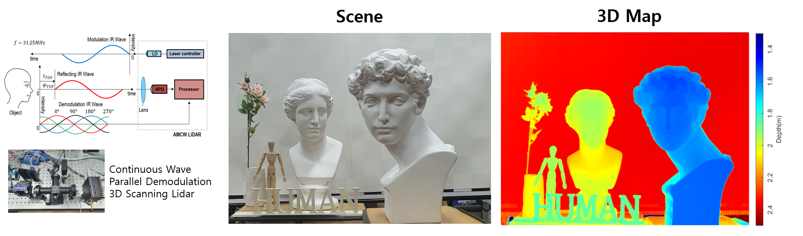
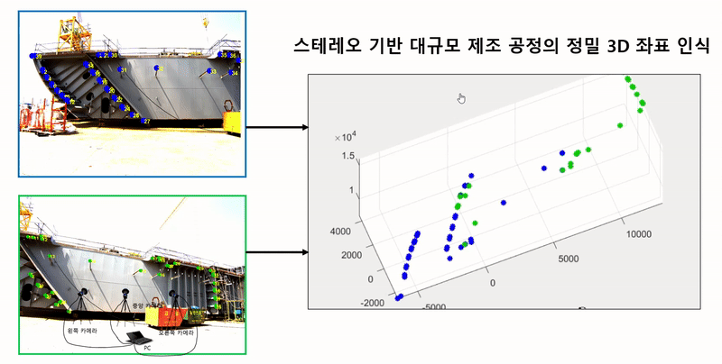
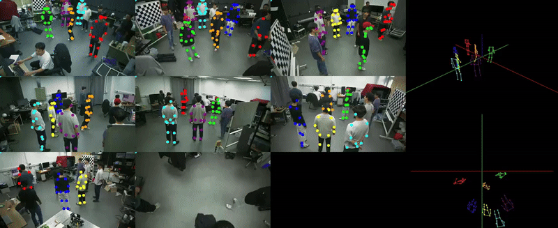

Research
3D Scene Recognition

- Research
- >
- 3D Scene Recognition
3D Scence Recognition
3D 공간 인식 테마에서는, 기계가 인간처럼 3D 공간 정보를 인식할 수 있는 3D 소자와 Lidar 시스템 그리고 3차원 식별 기술을 연구개발 합니다. 이는 무인자동차, 자율작업로봇 등이 주변 사물의 형상과 운동을 정확히 인식하는데 활용됩니다. 자율주행 자동차의 발전과 더불어 주변 사물과 현재 위치를 인식할 수 있는 Lidar가 핵심 부품으로서 급속히 발전하고 있습니다. 대부분의 상용 Lidar는 현재 그 크기와 가격 측면에서 상용화하기 매우 어려운 한계를 지니고 있습니다 (크기 수백 cc, 가격 최소 수십~수백만원). 본 연구실에서는 세계에서 가장 작고 정확한 측정이 가능한 Lidar를 목표로 연구 개발을 하고 있습니다. 기존의 펄스 방법대신, 소자와 구동이 간단하고 효율이 높은 연속함수 (Continuous Wave) 방식의 반도체 레이저를 사용하고, 수신단에서는 하나의 Photo Diode를 사용하여 부품의 개수 및 시스템의 크기를 최소화하였습니다 (광학/센싱모듈 크기 수십~100cc, 가격 10만원~100만원). 이를 레이저 스캐닝 기술 그리고 독자적인 광 변복조 기술과 결합하여 FHD 이상의 해상도와 1mm이하의 고정밀도를 달성하였습니다. 그리고 이 Lidar로 취득한 3차원 정보를 사용하여 물체 인식, 사람 탐지 및 식별하는 기술을 연구하고 있습니다. 물체의 거리 정보와 3차원 모양을 알 수 있기에 더욱 정확한 탐지가 가능하고 조명 환경에 강건하게 사람의 식별이 가능합니다. 이는 자율주행 자동차 및 로봇의 눈과 같은 기능을 하는 핵심 기술로 활용될 수 있습니다.
또한 위 Lidar 뿐 아니라 Stereo 카메라에 대해서도 연구가 진행 중입니다. 특히 정확도 관리가 3mm 오차 이내로 이루어져야 하는 선체 블록의 계측을 스테레오로 수행하는 연구가 수행 중에 있습니다. 스테레오를 사용시 기존 계측에 사용되던 광파기 장비보다 훨씬 간단한 프로세스와 시간이 짧게 걸린다는 큰 장점이 존재합니다. 다만 스테레오의 정확도가 광파기의 정확도(3mm)에는 미치지 못하는 상태이기 때문에 캘리브레이션 알고리즘 고도화/ 왜곡 모델의 개발/ 카메라 모델링의 방법을 통해 정확도 향상을 목표로 합니다.
선체블록 계측 뿐 아니라 공조기 벨트를 3차원 계측하여 공조기 벨트의 느슨함을 진단하는 연구도 수행하였습니다. 특히, 모든 사람들이 가지고 있는 스마트폰 한 대를 이용하여, Four mirror system을 통해 스테레오 시스템을 구성하고, 공조기 벨트의 3차원 경로를 복원함으로써 느슨함 심각도를 판별하였습니다. 이는 기존의 전류와 진동 센서를 부착하는 방법보다 훨씬 간단하고 시간 소요가 적다는 장점이 존재합니다.

- High-definition, robust, compact 3D Lidar sensor system with novel opto-mechanical signal processing methodology for autonomous vehicle and robots
- Time-of-Flight, Triangulation, Machine Learning based high-precision 3D information sensing
- 3D Object / Human detection and recognition system with deep learning algorithm
- 3D motion amplification using image signal processing
초소형 고정밀 3D Sensor (LiDAR)


거대 구조물의 제조 및 검사를 위한 3D 형상인식

다중 카메라를 사용한 사람의 3차원 자세 인식

스마트폰 한 대를 이용한 공조기 벨트 느슨함 진단